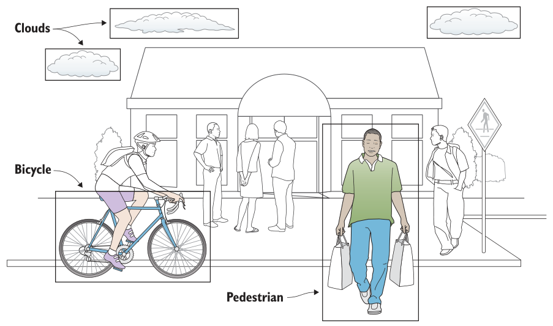
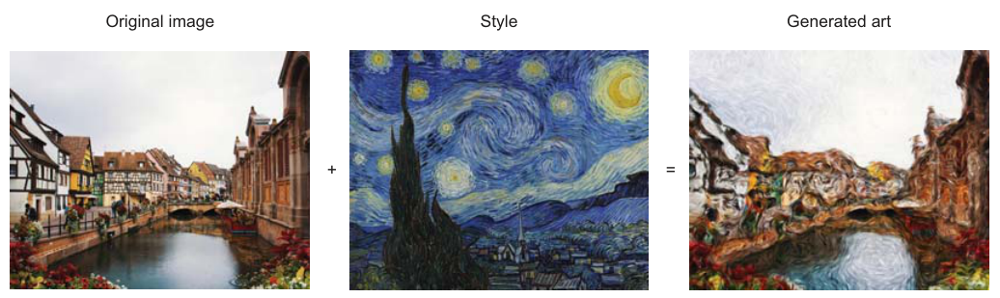
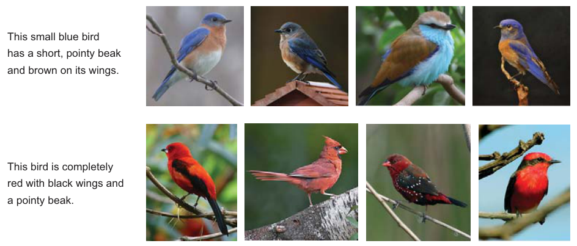
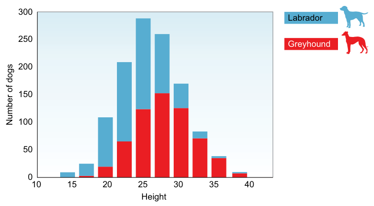

第 1 章 欢迎来到计算机视觉#
本章解决：视觉系统由什么组成、CV 能做什么、一张图如何变成预测。 全书主线在 1.3 节：\(\text{输入} \to \text{预处理} \to \text{特征提取} \to \text{ML 模型}\)，后面九章全是这四步的展开。 本章无模型代码，配套 notebook 用 PyTorch/numpy 做概念演示。
1.0 本章导图#
mindmap
root((计算机视觉))
视觉系统
传感设备 眼
解释设备 脑
六大应用
分类 CNN
检测 YOLO SSD
风格迁移
GAN 生成
人脸识别
以图搜图
CV 流水线
输入
预处理
特征提取
ML 模型
图像表示
灰度 F 二维
RGB 三维 HWC
预处理
灰度化决策
统一尺寸
数据增强
特征
手工 HOG SIFT
自动 端到端1.1 视觉系统：眼 + 脑#
计算机视觉（Computer Vision, CV）：让 AI 通过图像/视频看懂世界，并据此行动。关键词是 Visual Perception（视觉感知）——不是"拍到"行人，而是理解行人在哪、车道在哪、标志什么含义。
图像处理 ≠ 计算机视觉
处理图像（缩放、滤波）的机器 ≠ 理解图像内容的机器。图像处理只是 CV 系统里的一个零件。
人和机器的视觉系统结构相同（图 1.1、1.2）：
| 人类 | 机器 | 职责 |
|---|---|---|
| 眼 | Sensing Device 传感设备 | 捕获图像 |
| 脑 | Interpreting Device 解释设备 | 理解内容、输出预测 |
 图 1.1 人眼 + 大脑 = 传感 + 解释（截自原书）
图 1.1 人眼 + 大脑 = 传感 + 解释（截自原书）
作者的"认狗"比喻把机器学习讲完了：第一次见狗不认识 → 被告知"这是狗" → 学会；见到马，大脑用特征推理"四条腿、长脸——是狗吗"，被纠正后调整参数记住区别。这就是 Supervised Learning（监督学习） + Trial and Error（试错训练）：带标签数据 → 预测 → 纠错 → 更新。区别只在样本效率：人几张图就够，机器要成千上万张。
传感设备：按任务特化#
先定任务，再选设备。自动驾驶三件套互补：
| 设备 | 能力 | 短板 |
|---|---|---|
| Lidar | 不可见光脉冲 → 高分辨率 3D 地图 | — |
| 相机 | 看懂标志、标线 | 测不了距离 |
| Radar | 测距、测速 | 看不清细节 |
医疗用 X 光/CT，农业用其他雷达。蜜蜂的复眼（最多 3 万个小透镜）分辨率低但对运动极敏感——高速飞行保命靠它：传感器永远为任务而生。
解释设备：ANN 的诞生#
解释器是视觉系统的"脑"。科学家逆向工程中枢神经系统得到 ANN（人工神经网络）（图 1.3）：生物神经元的树突/突触 \(\leftrightarrow\) 人工神经元的输入 \(x_1,\dots,x_n\) / 输出 \(f(x)\)。

单个神经元机制极简单；百万级神经元按层堆叠才涌现学习行为——多层网络就是 Deep Learning（图 1.4）。
机器能超过人脑吗
10,000 张狗图、130 个品种：神经网络训练几小时到 >95% 准确率。许多分类/检测任务上机器视觉已超人。
1.2 六大应用鸟瞰#
| 应用 | 任务 | 代表模型 | 原书例子 |
|---|---|---|---|
| 图像分类 | 整图 → 一个标签 | CNN | 肺癌 CT 结节早筛（≤4mm 医生易漏）；交通标志 |
| 目标检测 | 多物体：分类 + 位置 | YOLO / SSD / Faster R-CNN | 图中同时框出行人/自行车（图 1.7） |
| 风格迁移 | 把 A 的风格套给 B | — | 城市照片 ×《星月夜》，几秒出"梵高画"（图 1.8） |
| 图像生成 | 从噪声/文字造新图 | GAN（2014, Goodfellow） | StackGAN：文字描述 → 从未存在的"照片"（图 1.9） |
| 人脸识别 | 精确识别人 | — | 手机解锁、watchlist 比对 |
| 图像推荐 | 以图搜图 | — | 电商相似服装检索（图 1.11） |
 |
 |
 |
 |
图 1.7 目标检测 · 图 1.8 风格迁移 · 图 1.9 GAN 文字生图 · 图 1.10 人脸验证/辨识（截自原书）
人脸识别的两种模式（引《Handbook of Face Recognition》）：
| 模式 | 匹配 | 回答的问题 |
|---|---|---|
| Face Identification 人脸辨识 | 1 : N | "你是谁？"（查库） |
| Face Verification 人脸验证 | 1 : 1 | "你是不是你声称的人？"（证件比对） |
GAN 的影响力侧写：2018 年 10 月，GAN 画作《The Portrait of Edmond Belamy》拍出 $432,500。
1.3 CV 流水线（全书主线）#
flowchart LR
A["① 输入<br/>图像 / 视频帧"] --> B["② 预处理<br/>统一尺寸 · 颜色变换 · 去噪"]
B --> C["③ 特征提取<br/>输出特征向量"]
C --> D["④ ML 模型<br/>预测类别"] 图 1.14 摩托车分类的概率输出（截自原书）
图 1.14 摩托车分类的概率输出（截自原书）
作者让你"扮演分类器"逐个看特征：轮子 → 排除狗；车灯 → 更像摩托；后挡泥板 → 更像摩托；两个轮子 → 锁定。输出 \(P(\text{motorcycle})=0.85\)、\(P(\text{car})=0.14\)、\(P(\text{dog})=0.01\)。
所有改进手段都落在这四步之内——这张对照表贯穿全书：
| 想提升模型 | 动哪一步 | 对应章节 |
|---|---|---|
| 多采数据 | ① | 第 4 章 |
| 预处理去噪、标准化 | ② | 第 3、4 章 |
| 更好的特征 | ③ | 第 3 章（CNN 自动提取） |
| 换分类器 / 调超参数 | ④ | 第 4 章 |
1.4 图像 = 函数#
**Pixel（像素）**是图像的最小单元，值 = 该位置光强。把图像看成二元函数：
- \(0\) = 黑，\(255\) = 白；坐标系原点在左上角。
- 尺寸记法：灰度 \(700\times500\) 图 → 矩阵 \((700,500)\)；彩色 \(700\times700\) → \((700,700,3)\)，即 3 个矩阵堆叠。
- 例：草地左上角 \(F(0,0) = [11, 102, 35]\)（森林绿）；\(32\times16\) 网格共 \(512\) 像素。
原书笔误
原书说"\(32\times16\) 图的 y 轴从 0 到 16"——16 像素高的图索引是 \(0\sim15\)（图 1.15 自己标的也是 15）。

 |
 |
图 1.16 计算机眼里只有数字矩阵 · 图 1.17 彩色图 = 3 通道堆叠（截自原书）
图像即函数 ⇒ 一切图像处理都是逐像素的数学运算（\(F\) 进，\(G\) 出）：
| 应用 | 变换 |
|---|---|
| 变暗 | \(G(x,y) = 0.5 \cdot F(x,y)\) |
| 变亮 | \(G(x,y) = 2 \cdot F(x,y)\) |
| 下移 150 像素 | \(G(x,y) = F(x,\,y+150)\) |
| 去灰成黑白 | \(G(x,y) = 0\) 若 \(F(x,y)<130\)，否则 \(255\) |
import torch # 导入 PyTorch
img = torch.zeros(16, 32) # 16x32 灰度图，全黑
img[13, 12] = 255.0 # F(12,13)=255：白像素
dark = 0.5 * img # 变暗 G=0.5F
light = 2.0 * img # 变亮 G=2F
shift = torch.roll(img, shifts=150, dims=0) # 下移150像素
bw = torch.where(img < 130, 0.0, 255.0) # 阈值130二值化
1.5 预处理#
目标：降复杂度、提精度。无法为每种拍摄条件写专属算法，所以先洗数据。
最常用的一刀——灰度化，砍前先过这个决策流程：
flowchart TD
A["拿到图像数据集"] --> B{"肉眼能从灰度图认出目标吗？"}
B -- 能 --> C["灰度化：3通道 → 1通道<br/>像素量与内存直接除3"]
B -- 不能 --> D["保留颜色"]
D --> E["反例①：皮肤癌检测依赖红色强度"]
D --> F["反例②：车道线必须区分黄线/白线"]
C --> G["继续：统一尺寸 / 增强"] 图 1.21 数据增强：翻转/旋转/去色/边缘增强，一个样本变 N 个（截自原书）
图 1.21 数据增强：翻转/旋转/去色/边缘增强，一个样本变 N 个（截自原书）
- 统一尺寸（Standardization）：CNN 要求同尺寸输入，先缩放（细节第 3 章）。
- 数据增强（Data Augmentation）：缩放、旋转、仿射变换造"新"样本。
- No Free Lunch（Wolpert & Macready）：没有万能配方——架构、超参、预处理都只能按问题实验。
1.6 特征提取#
Feature（特征）= 物体独有且可测量的属性，是喂给模型的输入。房价类比：面积、房间数 → 预测价。
同一个"轮子"特征的强弱：
| 判别问题 | 强弱 | 结论 |
|---|---|---|
| 摩托 vs 狗 | 强 | 一锤定音 |
| 摩托 vs 自行车 | 弱 | 需补后视镜、车牌、脚踏等组合特征 |
 图 1.22 图像 → 特征提取算法（黑盒）→ 特征向量（截自原书）
图 1.22 图像 → 特征提取算法（黑盒）→ 特征向量（截自原书）
特征向量（Feature Vector）：1D 数组，物体的紧凑表示。
好特征的两个标准#
① 可泛化（Repeatability）：特征要识别"一般的"摩托，不是某张图的局部拷贝。看一张图学到的是具体轮子；看一千张图学到的是"带纹理的圆形"。
② 有区分度——作者的 Greyhound vs Labrador 思想实验：

def classify(height_inch): # 输入：狗的身高（英寸）
if height_inch <= 20: # 直方图左端
return "Labrador（>80%）" # 小于20英寸：大概率拉布拉多
if height_inch >= 30: # 直方图右端
return "Greyhound" # 大于30英寸：基本是灵缇
return "看其他特征" # 中间带：身高失效
身高是有用但不充分的特征；眼色分布约 50/50（图 1.25），与犬种无相关——无用特征。推论：单特征够用就直接写 if-else，何必训练模型；也几乎不存在单特征包打天下，所以永远需要多特征组合。
选特征的方法
假装自己是分类器：想区分两类东西，你会先问什么信息？答案就是候选特征。好特征四条：可识别、易跟踪比较、跨尺度/光照/视角一致、有噪声或遮挡时仍可见。
手工特征 vs 自动特征#
 |
 |
图 1.26 传统 ML：手工特征 + SVM/AdaBoost · 图 1.27 DL：自动提特征，端到端（截自原书）
| 传统 ML | 深度学习 | |
|---|---|---|
| 特征来源 | 手工设计（HOG / Haar Cascades / SIFT / SURF） | 网络逐层自动学 |
| 分类器 | SVM / AdaBoost | 网络末层自带 |
| 训练方式 | 两段式 | 端到端 |
| 预处理 | 重 | 轻（网络自己干重活） |
误区：'神经网络只学有用特征'
初始化时网络对所有特征随机赋权，训练中才按重要性调整权重——出现频率高的模式权重变大，低权重特征几乎不影响输出。垃圾特征也会被捞进来，这正是后面正则化、Dropout 存在的理由。
为什么要提特征：1 万张 \(1000\times1000\) 的摩托车图（背景有纯有乱）→ 提取后丢掉无关信息，只留浓缩特征列表喂分类器（图 1.28）——比让分类器直接啃原图简单快得多。
1.7 分类器学习算法#
 图 1.29 图像流过网络层层学特征，末层输出类别（截自原书）
图 1.29 图像流过网络层层学特征，末层输出类别（截自原书）
- 两条路线：传统 ML（SVM，部分问题够用）vs CNN（复杂视觉问题主力）。
- 浅层检测图案，深层检测"图案中的图案"，层层组合成特征向量。
- 网络越深学得越多——这就是 Deep Learning 名字的由来（深度带来 trade-off，第 2、3 章讲）。
- 最后一层通常就是分类器：点亮 motorcycle 或 not motorcycle。
坑与陷阱#
6 个容易踩的坑
- 图像处理 ≠ 计算机视觉：会缩放滤波不等于看懂图像。
- 别盲目灰度化：颜色是关键特征时（皮肤红斑、黄/白车道线）去色 = 自废武功。
- 特征必须可泛化：从单张图抠出的局部只是拷贝，不是特征。
- "网络只学有用特征"是误区：所有特征随机赋权起步，靠训练分优劣。
- No Free Lunch：没有万能配方，只有按问题的实验。
- 先定任务再选传感器：顺序反了是端到端系统设计的大忌。
速览#
- 视觉系统 = 传感设备 + 解释设备，人机同构。
- CV 流水线四步：输入 → 预处理 → 特征提取 → ML 模型；一切改进都落在这四步。
- 图像是函数：灰度 \(F(x,y)\in[0,255]\)，彩色 \((H,W,3)\)，原点在左上角。
- 图像即函数 ⇒ 图像处理 = 逐像素数学运算。
- 预处理目标是降复杂度提精度；灰度化前先做"肉眼测试"。
- 特征 = 独有可测属性；特征向量是紧凑表示。
- 好特征：可泛化 + 有区分度（Greyhound 实验）。
- 传统 ML = 手工特征 + SVM；DL = 自动特征 + 端到端。
- 网络对所有特征随机赋权起步，训练按频率/重要性调整。
- 浅层学图案、深层学图案中的图案——深度学习之"深"。
术语速查#
| 英文 | 中文 | 一句话 |
|---|---|---|
| Visual Perception | 视觉感知 | 不止看见，而是看懂 |
| Sensing / Interpreting Device | 传感 / 解释设备 | 视觉系统的"眼"与"脑" |
| Lidar / Radar | 激光雷达 / 雷达 | 3D 建图 vs 测距测速 |
| ANN / Deep Learning | 人工神经网络 / 深度学习 | 单元简单，堆叠涌现智能 |
| Supervised Learning / Labeled Data | 监督学习 / 带标签数据 | 看带答案的样本学映射 |
| Image Classification | 图像分类 | 整图 → 一个标签 |
| Object Detection | 目标检测 | 分类 + 定位多物体 |
| Style Transfer | 风格迁移 | 把一幅画的风格套给另一张 |
| GAN | 生成对抗网络 | 2014 年提出，从文字/噪声生成新图 |
| Face Identification / Verification | 人脸辨识 / 验证 | 1:N "你是谁" vs 1:1 "你是不是你" |
| CV Pipeline | CV 流水线 | 输入→预处理→特征→模型 |
| Pixel / Channel | 像素 / 通道 | 灰度 1 通道，RGB 3 通道 |
| Data Augmentation | 数据增强 | 用变换造扩充样本 |
| Feature / Feature Vector | 特征 / 特征向量 | 独有可测属性 / 其 1D 表示 |
| HOG / SIFT / SURF / Haar | —— | 经典手工特征 |
| SVM / AdaBoost | —— | 传统 ML 分类器 |
| Repeatability | 可重复性 | 特征对同类所有物体稳定成立 |
| No Free Lunch Theorem | 没有免费午餐定理 | 无万能配方 |
覆盖自查#
原书小节 → 笔记位置
| 原书 | 笔记 |
|---|---|
| 章首引言 | 导语 + 1.0 导图 |
| 1.1（1.1.1–1.1.4 + 蜜蜂侧栏 + 超人侧栏） | §1.1 |
| 1.2.1–1.2.6 + GAN 画作侧栏 | §1.2 |
| 1.3 | §1.3 |
| 1.4.1–1.4.3 + 表 1.1 + 图 1.19 + 侧栏 | §1.4（绿色色值表略，保留 F(0,0) 实例） |
| 1.5 + 1.5.1 + 侧栏 | §1.5 |
| 1.6.1–1.6.3 + 三处侧栏 | §1.6 |
| 1.7 | §1.7 |
| 章末 Summary | §速览 |